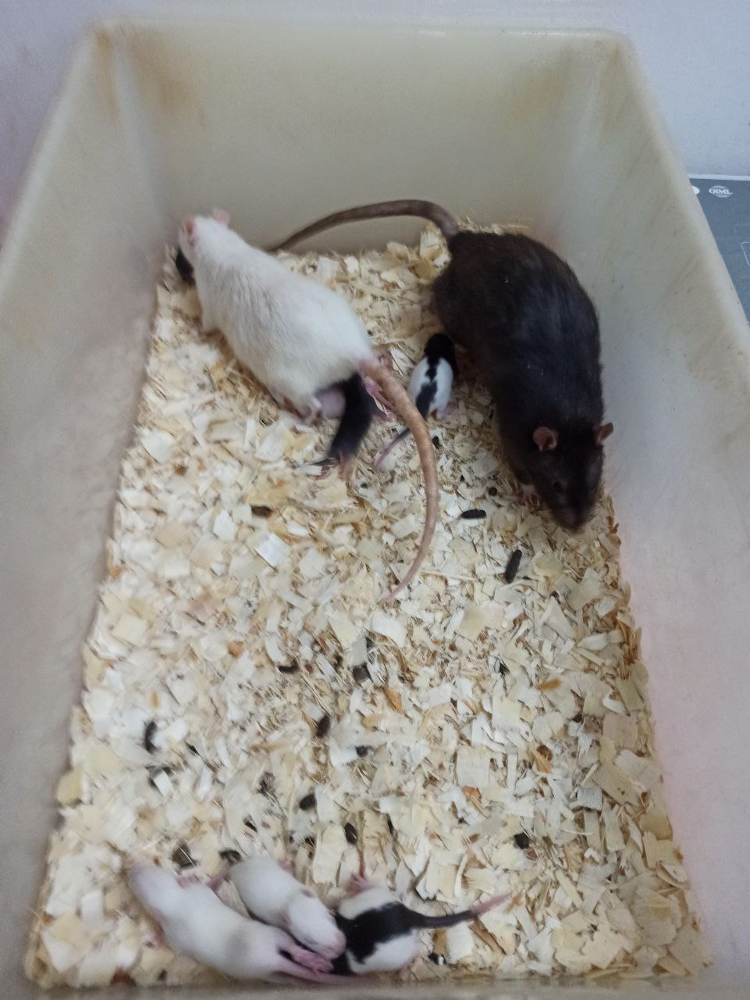
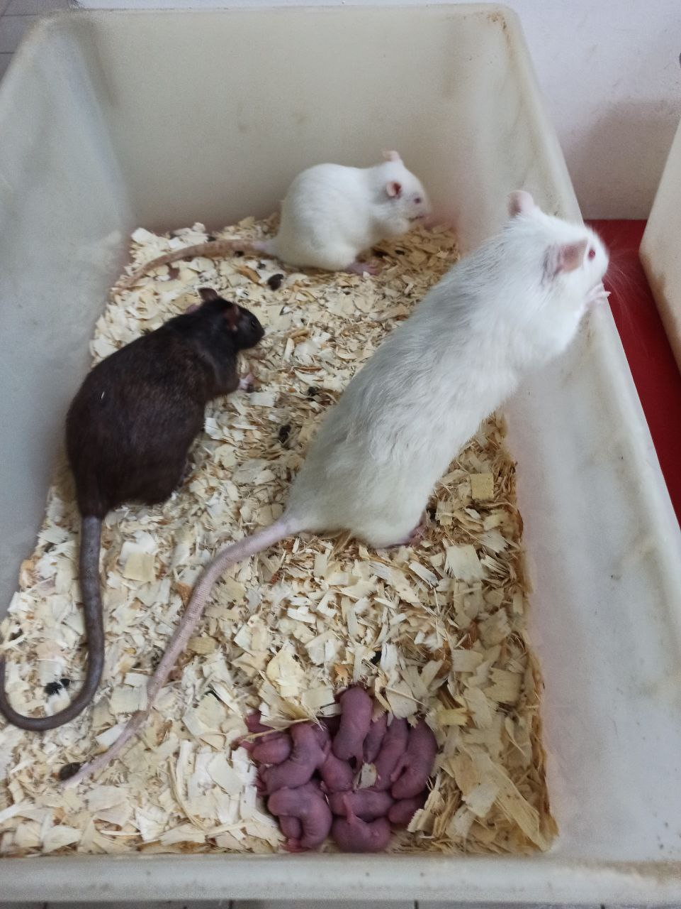
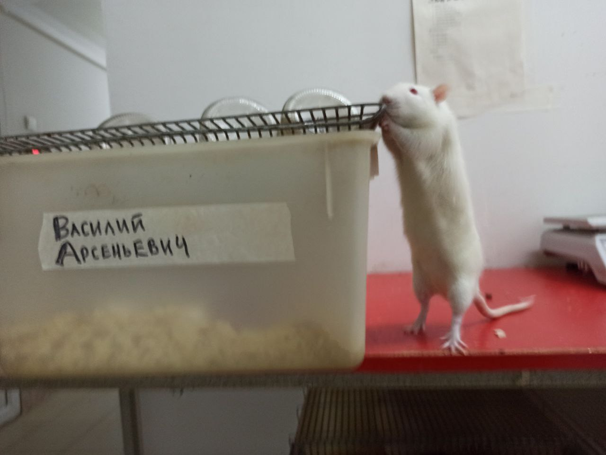
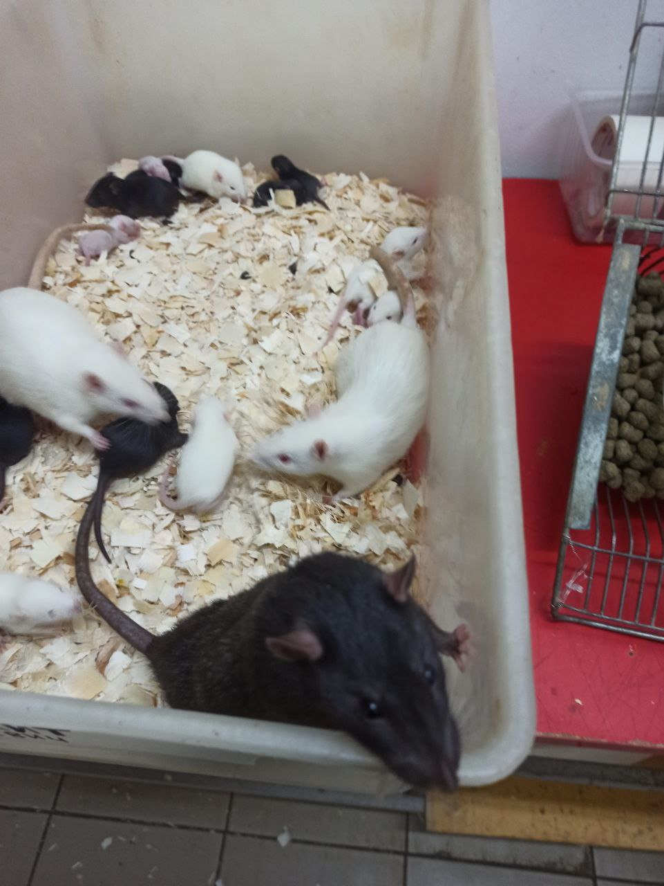
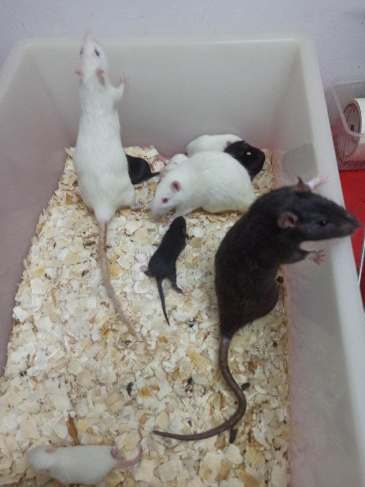
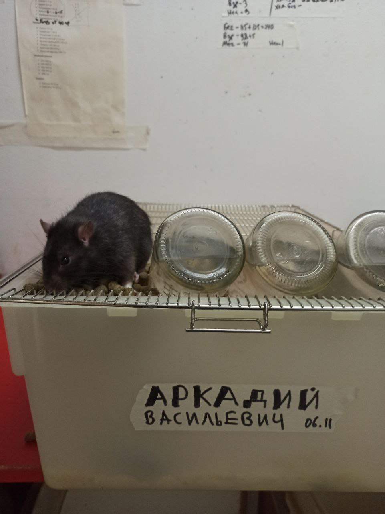

Династия Дикарей
История этой династии началась в конце 2022 года. Работники фермы поймали самца дикой крысы и ради прикола, вместо того, чтобы его убить, посадили его к лабораторным самкам. Так на ферме появился Дикарь (ум. март 2023). Это был огромный крыс, занимавший половину клетки. Его шерсть была очень жесткой, и на удивление, у диких крыс цвет шерсти не черный и не серый, а скорее темно-бурый. У черного Дикаря и белых лабораторных самок начало появляться потомство. Примечательно, что до половины детенышей имели такую же бурую или черную шерсть, как и у диких крыс.Наследником Дикаря стал Сплинтер первый (январь - ноябрь 2023). Это был такой же большой крыс, однако удивительно, что его шерсть уже была почти чисто черной. Как и отец, Сплинтер первый был посажен к белым лабораторным самкам. Их дети все еще были в большинстве своем черные. Вслед за Сплинтером первым пришел Сплинтер второй (октябрь 2023 - 9 октября 2024). Он также имел черную шерсть и немного белый живот. Как можно заметить, оба крыса были названы в честь Сплинтера из мультфильма "Черепашки ниндзя". До определенного момента Сплинтер второй, как и его предки, был единственным самцом крысы на ферме, а потому он работал сразу на две клетки. То есть, сначала он жил в одной клетке с одними самками, а затем его пересаживали в другую клетку к другим самкам, и так по кругу.
Другие крысы на ферме
В январе 2024 года на ферме появился новый обитатель - самец лабораторной крысы по имени Федор (ум. декабрь 2024). Его история была достаточно удивительной. Дело в том, что крыс на ферме душат углекислым газом - это быстрая и безболезненная смерть. Однако Федор смог отдышаться на чистом воздухе и буквально "восстать из мертвых". Он выпрыгнул из кучи других крыс, чем напугал работников. За это его пощадили и посадили к другим крысам. Федор был огромным, его вес был даже зафиксирован - более 600 грамм, при том, что нормальный вес взрослых крыс 200-400 грамм. Один раз между Федором и Сплинтером вторым был устроен шуточный бой - победила дружба.Чуть позже, в июне 2024 года на ферме появился третий крыс - Арсений (ум. ок. 4 февраля 2025). Это также был белый лабораторный самец крысы. Казалось бы, Арсений был не особо примечательным обитателем фермы. Однако именно он положил начало будущей династии, получившей названия Арсеньевы. Любопытный факт - хоть имя для Федора изначально было выбрано случайно, имя для Арсения было подобрано так, чтобы имена обоих крыс соответствовали персонажам из сериала "Кухня" - Сени и Феди.
В начале 2025 года на ферму были отданы две крысы породы Дамбо - самец и самка. Это порода декоративных крыс, чья уши расположены набок, в то время как у обычных крыс они стоят прямо вверх. Шерсть у них была песчаного цвета. Самец был назван Рэмбо, что было созвучно с Дамбо. Однако обе крысы были уже старыми, а потому не прожили долго - Рэмбо умер по естественным причинам, но смог даже оставить потомство.
В июне 2025 года на освободившееся место прибыл Владимир (ум. 6 ноября 2025). История его появления также достаточно интересна. Дело в том, что нужно было выбрать одного белого самца из кучи таких же. Когда крысам дали морковку, Владимир украл кусок у другой крысы, за что и был выбран ради прикола. Он был назван Владимиром в честь Ленина. Примечательно, что Арсений и Владимир относились к линии Вистар, то есть по сути являлись благородными крысами.
Династия Арсеньевых
Наследником Сплинтера второго в итоге стал Реми (сентябрь 2024 - 3 октября 2025). На данный момент он является долгожителем среди крыс на ферме - приблизительно 1 год и 1 месяц, при том, что крысы на ферме живут не больше года, хотя в идеальных условиях они могут жить около 2 лет. Вес Реми также был зафиксирован и составил 620 грамм. Как можно заметить, Реми был назван в честь крысы из мультика "Рататуй". С тех пор разведение черных крыс стало полноценным экспериментом - как скоро черный ген выродится, при том что они всегда скрещиваются с белыми. К сожалению, на ферме так и не осталось прямых потомков Реми, поэтому династия прервалась. Хотя двое сыновей Реми все же были отданы другим людям для содержания дома.

Реми со своей семьей, 16 июля 2025 года

Реми возле своего офиса, 16 июля 2025 года

Василий со своей семьей, 16 июля 2025 года. Василий - крайний справа

Василий возле своего офиса, 16 июля 2025 года

Василий со своей семьей, 18 декабря 2025 года. Василий - в верхнем левом углу

Василий, 18 декабря 2025 года

Ипполит со своей семьей, 18 декабря 2025 года

Ипполит на своей клетке, 18 декабря 2025 года

Аркадий со своей семьей, 18 декабря 2025 года

Аркадий на своей клетке, 18 декабря 2025 года
Интересные факты
При скрещивании черной и белой крысы могут родиться три типа детенышей - либо чисто черные, либо чисто белые, либо капюшонные. Третий тип - это когда у крыс черная голова и спина, а все остальное белое. То есть, черный и белый цвет у них никогда не смешивается в серый. Также иногда попадались и белые крысы с черными глазами. Дело в том, что у лабораторных крыс глаза красные, поскольку они являются альбиносами, а у диких - черные. Черный ген у крыс является доминантным, поэтому при скрещивании у белых крыс могут появиться черные глаза. Что удивительно, у молодых черных крыс шерсть довольно мягкая, как у лабораторных, однако с возрастом она становится жесткой, как у диких предков.Несмотря на то, что у лабораторных крыс искусственно ослаблен иммунитет, на ферме было зафиксировано довольно мало болеющих крыс. Более того, только несколько крыс за все время умерло по естественным причинам. Также у белых крыс на ферме сильно повышен иммунитет за счет скрещивания с дикими крысами, у которых он гораздо лучше.
Крысы обладают невероятной живучестью. Однажды на ферме был случай, когда в холодильник были посажены крысы, которые не до конца умерли от газа. Они смогли отдышаться и целую неделю жили в холодильнике при температуре -18 градусов.
Крысы довольно общительные существа. Они легко привыкают к рукам, если их приучать, а также они не терпят одиночества. Именно поэтому крыс обычно содержат группами, или же семьями.